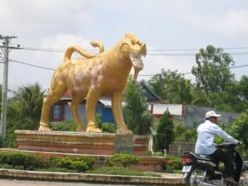

- Siem Reap
- Pailin
- Battambang
- Pursat
- Banteay Meanchey
- Oddar Meanchey
- Preah Vihear
- Kampong Thom
- Kampong Chhnang
- Kampong Cham
- Stung Treng
- Ratanakiri
- Mondulkiri
- Kratie
- Tbongkhmum
- Preyveng
- Svay Rieng
- Kandal
- Phnom Penh
- Takeo
- Kampong Speu
- Kampot
- Kep
- Preah Sihanouk
- koh kong


Svay Rieng Travel Guides
General Information
Svay (pronounced Swai) Rieng is on of the smallest and sleepiest Cambodian provinces that just happen to have one of the country's busiest highways running straight through - National Highway No 1, which links Phnom Penh and Ho Chi Minh City in Vietnam just after you cross the Mekong River by way of the Neak Loeung Ferry. It is also one of the poorest provinces of Cambodia due to the poor quality of the land. Most of the provincial population eke out a subsistence living based on farming and fishing.
Svay Rieng is the provincial capital, a sleepy town just 43 km from the Bavet border crossing. This is a fairly prosperous place as a result of the border trade traffic, business people and travellers passing trough. The town is a very friendly place and makes for a pleasant overnight stop whether coming from or going to Vietnam.
Svay Rieng town is situated near the Waiko River and its vast, scenic marshlands, the result of a wide stretch of the river drying up significantly over the years. It's a pleasant setting and one that can be enjoyed at several different spots along the river and marsh. A bridge over the Waiko, not far from the main part of town, bears a plaque that states prime minister Hun Sen donated the bridge.
During the long Vietnam War, American forces believed that this was the place, where Vietnamese communists had their intelligence headquarter. For sure there were undoubtedly a lot of Vietnamese communists hiding especially in the South of Cambodia during much of the war, but there wasn't a strategic centre like the Pentagon here. In 1969 the Americans began unauthorised bombing in this area and in 1970 joined with South Vietnamese forces for a big ground assault.
Geography
Svay Rieng is a small low land province with 2,966 square kilometres. Majority of land is arable land and it is under Mekong water half a year. It?s located in the Southeast of the country bordering Kampong Cham to the North, Prey Veng to the West and Vietnam to the East and South. The Southeast of the province occupies a jut of land sticking into Vietnam, so the Southeast of the province is literally surrounded from Vietnam.
The province consists generally of the typical plain wet area for Cambodia, covering rice fields and other agricultural plantations. The land state is due to the American carpet bombing a real pity no forests and cratered countryside are the results. The province also features two of the biggest rivers of the country (actually they symbolize the provincial borders) the Tonle Bassac and the mighty Mekong.
Population
The current population in this province is about 550,466 people or 3.8% of the country's total population (14,363,519 person in Cambodia, 2007, provincial government data), with 261,318 male and 289,148 female. The population density is therefore 185.6 people per square kilometre.
Climate
The country has a tropical climate - warm and humid. In the monsoon season, abundant rain allows for the cultivation of a wide variety of crops. This year-round tropical climate makes Cambodia ideal for developing tourism. Travellers need not to fear natural disasters such as erupting volcanoes or earthquakes, and the country is not directly affected by tropical storms.
Climate: Cambodia can be visited throughout the year. However, those plans to travel extensively by road should be avoided the last two months of the rainy season when some countryside roads may be impassable. The average temperature is about 27 degrees Celsius; the minimum temperature is about 16 degrees. December and January are the coolest months, whereas the hottest is April.
General information about the provincial climate:
- Cool season: November- March (24-32c)
- Hot season: March- May (28c -36c)
- Rainy season: May - October (24-32c, with humidity up to 90%.)
Economy
Svay Rieng's economy consists basically of agricultural farming, fishery, rice and fruit cropping and some garment factories producing for international markets. Due to its location next to Vietnam there is some trade evolving in recent years. Especially the rural households depend on agriculture and its related sub-sectors.
The Svay Rieng Market is the place to change money. There are plenty of the telltale glass cases of the moneychangers along the front, as well as inside the market area. They readily change dollars, riel and the Vietnamese dong.